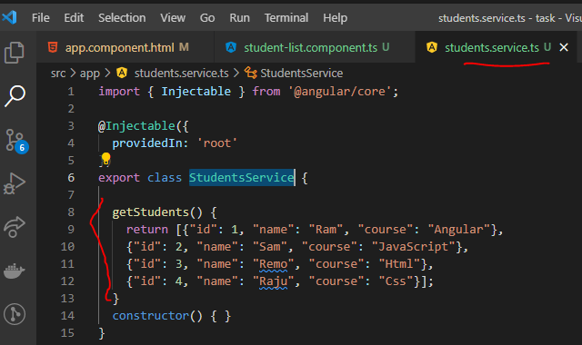
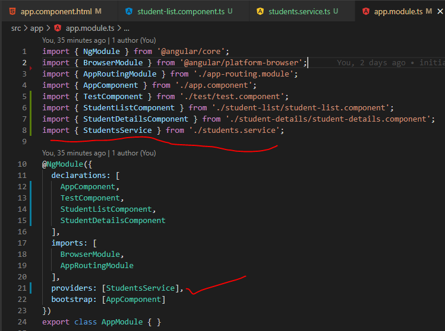
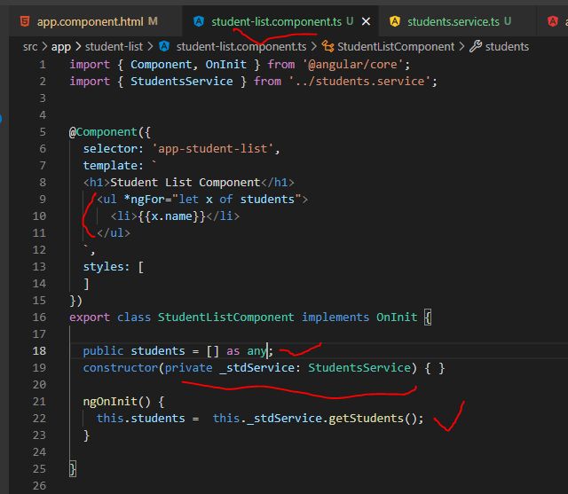

Using Service
DI as a framework:
- To use the service, we need to follow below steps.
- Define the studentService class
- Register with Injector
- Declare as dependency in Student-list and Student-Details components
- STEP1: I have created "StudentsService" (ng g s students --skipTests=true)
- STEP2:Inside the created service, declare the method and return the data like below.

- STEP3:Now registered the service in app.module.ts( it is parent Module file, so To register the service here then you can access entire application where ever required for this service data ) file under Providers[ ] and import the same.

- STEP4:To use this service in required components, we need to inject the service into the constructor and store that service data into one variable under the ngOninit(Life hok) like below.
